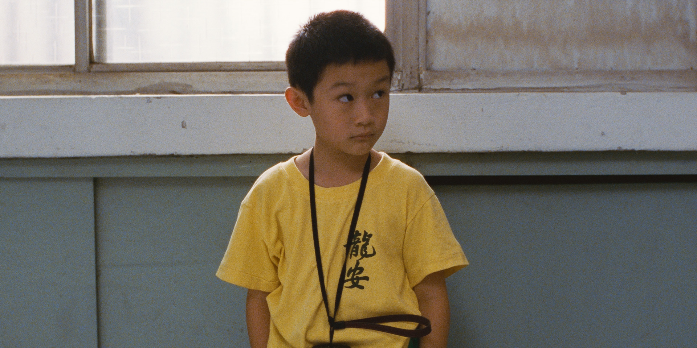

STORY
小学生のヤンヤンは、コンピュータ会社を経営する父ＮＪ、そして母、姉、祖母と共に台北の高級マンションで幸せを絵に描いたような暮らしをしていた。だが母の弟の結婚式を境に、一家の歯車は狂いはじめる。祖母は脳卒中で入院。ＮＪは初恋の人にバッタリ再会して心揺らぎ、母は新興宗教に走る……。そしてＮＪは、行き詰まった会社の経営を立て直すべく、天才的ゲーム・デザイナー太田と契約するため日本へと旅立つのだが…。


小学生のヤンヤンは、コンピュータ会社を経営する父ＮＪ、そして母、姉、祖母と共に台北の高級マンションで幸せを絵に描いたような暮らしをしていた。だが母の弟の結婚式を境に、一家の歯車は狂いはじめる。祖母は脳卒中で入院。ＮＪは初恋の人にバッタリ再会して心揺らぎ、母は新興宗教に走る……。そしてＮＪは、行き詰まった会社の経営を立て直すべく、天才的ゲーム・デザイナー太田と契約するため日本へと旅立つのだが…。